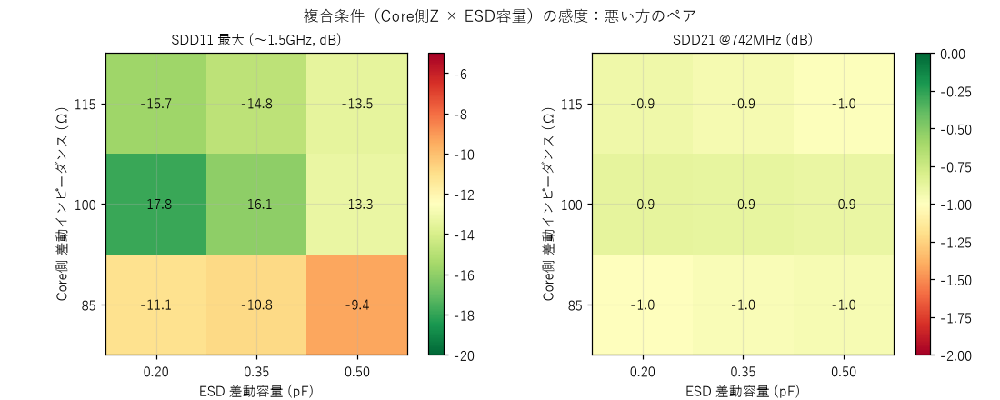
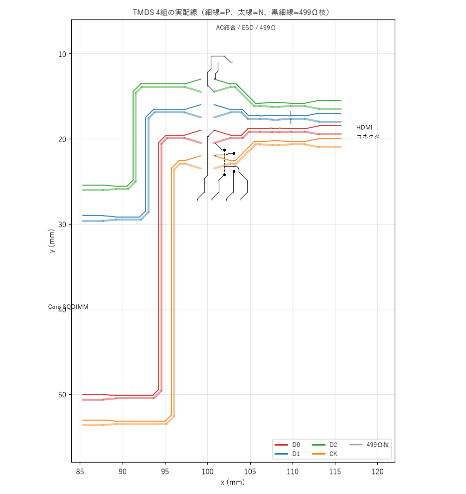
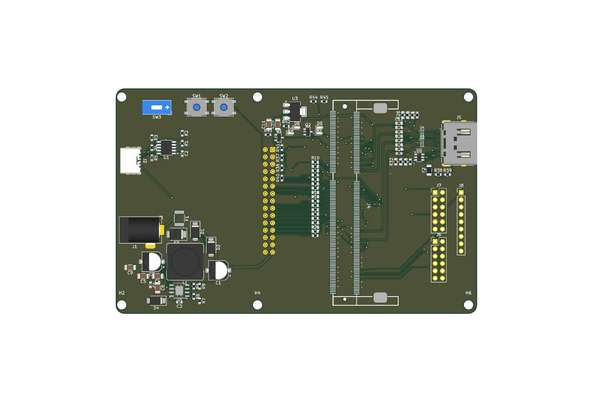
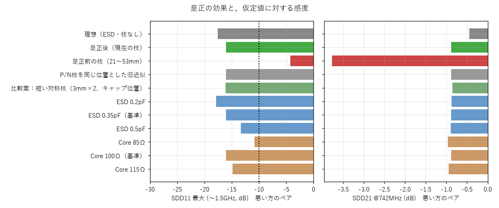
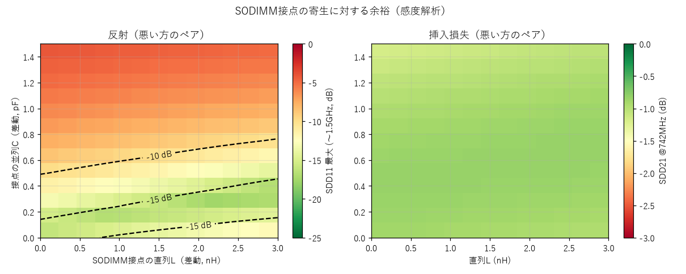

最新：第3版監査の引き継ぎ・再確認（851adf4、24件の回帰試験と数値再現）
第3版監査後の検査修正・回帰試験（ランド寸法、配線幅・分類、D2説明）
結論
1. 第2回監査の指示と対応状況
| # | 指示 | 状態 | 要点・結果 |
|---|---|---|---|
| A1 | ESD実部品とフットプリントの照合 | 完了（残る制限あり） | 寸法・端子の比較表を保存（docs/ESD_フットプリント照合_RCLAMP0524P.md）。GNDランド幅0.30→0.42mmに修正、専用フットプリント作成、BOM・回路・PCBへ反映。メーカー推奨ランドはデータシートに無い |
| A2 | ソケット引き出し線・パッド遷移のモデル化、分類の網羅 | 完了 | 全トラック・ビアを分類し未分類0。引き出し線をモデルへ追加。パッド内の銅は除外し長さを記録 |
| A3 | P/N抵抗枝の異なる接続位置 | 完了（D1を0.585mmへ追加修正） | 4ポートモデルでP/Nを別位置に接続。モード変換を評価。短い対称枝との比較を保存。D1P/Nの枝を0.585mmへ短縮し再解析 |
| A4 | Core Z × ESD容量の複合感度 | 完了（目標を外れる条件あり） | 3×3の結果表を公開。外れる条件と受け入れる不確かさを明記 |
| A5 | 自動検査・説明の整合 | 完了 | 導通・ピン対応・負の検査・分類・ESD照合が終了コードで失敗する。READMEの数値、対象版、ハッシュ・再生成手順を揃えた |
| B1/B2 | 3D解析の較正（単線・差動） | 未着手（未達のまま保留） | 今回の作業では実施していない。3Dの数値は設計根拠に使っていない。第2回監査の記録（単線の較正未達）が最新 |
| C | Linux/GPU共通用途の未完了事項 | 未着手 | 8bit双方向PARLIO、電源断・逆給電、最終ネットリストのピン表、GPIO所有権はキャリア要求側の確定事項で、この作業では扱っていない。HDMI修正だけではLinux/GPUの物理通信・安全な電源操作の成立を確定しない |
2. A1 ESD実部品とフットプリントの照合
購入対象を DOWO RCLAMP0524P（LCSC C293965、DFN2510-10L、データシート Rev.G1.00 2024/03/01）に固定しました。設計初期のSemtech品を前提とした「素通し」の想定と、KiCad標準USON-10の流用は誤りの原因でした。比較表は docs/ESD_フットプリント照合_RCLAMP0524P.md に保存しました。
| 項目 | データシート（p.4） | 旧（USON-10流用） | 新（専用） |
|---|---|---|---|
| 本体 D×E／ピッチ | 2.50×1.00／0.50 mm | 同じ | 同じ |
| 信号端子 幅 b | 0.15〜0.25 | ランド0.30 | ランド0.28 |
| GND端子（3・8）幅 b1 | 0.35〜0.45 | ランド0.30（不足） | ランド0.42（隣との間隔0.15mm） |
| 端子長 L | 0.33〜0.43 | ランド0.55 | ランド0.55（つま先0.16mm） |
| 端子機能 | I/O=1,2,4,5 GND=3,8 NC=6,7,9,10 | フロースルー前提のシンボル | シンボルをIO／NCへ修正。NCは銅ストラップで信号線へ接続 |
自動検査 check_esd_footprint.py（127項目）：全項目OK。ストラップ除去の負の検査、DRC、銅の連続性も再実行しました（A5）。残る制限：データシートに推奨ランドパターンが無いため、新ランドは外形図から導いた値です。注文時にJLCPCBの部品ライブラリのフットプリントと向き（端子1）を確認してください。
3. A2 経路の分類とパッド遷移のモデル化
ルータが出力する tmds_roles.json に、stub（パッドエスケープの細線、Core側・コネクタ側）とstrap（ESD銅ストラップ）の役割を追加し、全TMDS銅を分類しました。check_classification.py が、基板の全トラック・ビアの各点が役割の線分に一致するかを検査します（未分類・役割だけで銅が無い場合は終了コード1）。結果：main 120, stub 16, strap 8, branch 50, via_main 4、未分類 0、実体のない役割 0。
| ネット | PCB線分 | ビア | main | stub | strap | 枝 |
|---|---|---|---|---|---|---|
| HDMI_CKN | 8 | 0 | 7 | 1 | 0 | 0 |
| HDMI_CKN_C | 21 | 0 | 8 | 1 | 1 | 11 |
| HDMI_CKP | 8 | 0 | 7 | 1 | 0 | 0 |
| HDMI_CKP_C | 21 | 2 | 8 | 1 | 1 | 11 |
| HDMI_D0N | 8 | 0 | 7 | 1 | 0 | 0 |
| HDMI_D0N_C | 17 | 2 | 8 | 1 | 1 | 7 |
| HDMI_D0P | 8 | 0 | 7 | 1 | 0 | 0 |
| HDMI_D0P_C | 17 | 0 | 8 | 1 | 1 | 7 |
| HDMI_D1N | 8 | 0 | 7 | 1 | 0 | 0 |
| HDMI_D1N_C | 11 | 0 | 8 | 1 | 1 | 1 |
| HDMI_D1P | 8 | 0 | 7 | 1 | 0 | 0 |
| HDMI_D1P_C | 11 | 0 | 8 | 1 | 1 | 1 |
| HDMI_D2N | 8 | 0 | 7 | 1 | 0 | 0 |
| HDMI_D2N_C | 18 | 0 | 8 | 1 | 1 | 8 |
| HDMI_D2P | 8 | 0 | 7 | 1 | 0 | 0 |
| HDMI_D2P_C | 14 | 0 | 8 | 1 | 1 | 4 |
これまでの解析で抜けていたもの：Core側の幅0.127mm・長さ2.4mmの引き出し線8本は、主経路のroleに含まれず、解析が0.2mm配線から始まっていた（監査指摘）。今回これを経路に加え、ソケット／コネクタのパッド銅の内側に入っている部分は除外して長さを記録しました（パッドは幅の広い導体で、線路の区間ではないため。2.4mm全部を細線として足すことはしていません）。
| ペア | 解析経路長（引き出し線なし→あり） | パッド内の除外長（Core側とコネクタ側、P+N合計） | SDD11最大(〜1.5GHz) | SDD21 @742MHz |
|---|---|---|---|---|
| D0 | 54.01 → 56.71 mm | 4.61 mm | -15.2 → -16.8 dB | -0.86 → -0.88 dB |
| D1 | 36.01 → 38.71 mm | 4.61 mm | -15.9 → -17.3 dB | -0.78 → -0.80 dB |
| D2 | 36.04 → 38.73 mm | 4.61 mm | -15.3 → -15.5 dB | -0.77 → -0.79 dB |
| CK | 54.64 → 57.33 mm | 4.61 mm | -15.5 → -17.4 dB | -0.86 → -0.88 dB |
同一モデル（4ポート）で、引き出し線の有無だけを変えた比較です（パッド内の除外後で経路が約2.7mm長くなる。SDD11最大は0.2〜2.1dB変化（改善側）、SDD21は約0.02dB変化）。引き出し線は幅0.127mmで、パッド直後の部分の差動インピーダンスが高い（約150Ω）ため、除外・追加の影響は結合区間のインピーダンスとの組み合わせで決まります。この結果だけで、パッド直後の構造が問題ないとは言えません（3D解析で確認していません）。
4. A3 P/N抵抗枝の接続位置
これまで、P/Nの枝のアドミタンスを一つに合成し、P側の位置だけに挿入していました（D1では、N側の枝が実際は別の位置にあるのを再現できていませんでした）。今回、モデルをP線・N線を別々に持つ4ポートに変更しました。結合区間は2Dソルバの偶モード・奇モードのインピーダンスと実効誘電率で表し、P枝・N枝はそれぞれの実際の分岐位置（経路上の距離）で、各線から対地へ接続します。差動（SDD11・SDD21）に加え、差動→コモン変換（SCD21）を計算します。
| ペア | 枝長 P/N | 分岐位置 P/N（キャップ側からの距離） | SDD11最大：P位置のみの旧近似 → 実位置 | SCD21最大：旧近似 → 実位置 |
|---|---|---|---|---|
| D0 | 9.1 / 8.0 mm | 0.0 / 0.1 mm | -16.8 dB → -16.8 dB | -39.7 dB → -39.5 dB |
| D1 | 0.6 / 0.6 mm | 9.4 / 9.4 mm | -17.3 dB → -17.3 dB | 数値床（理想対称） → 数値床（理想対称） |
| D2 | 2.2 / 7.5 mm | 0.0 / 0.0 mm | -15.5 dB → -15.5 dB | -25.5 dB → -25.5 dB |
| CK | 8.2 / 6.4 mm | 0.1 / 1.16 mm | -17.5 dB → -17.4 dB | -36.0 dB → -35.3 dB |
- 2026-10-24追加修正：D1のR30/R31を0402に変更してESD後の主配線間へ配置。信号分岐はP/Nとも0.585mm、GNDパッドから0.69mm配線したランド外にビアを設けた。主差動配線は維持した。
- 短く対称な枝（3mm×2、キャップ位置）との比較（8章の表）：D1のSDD11最大は改善しますが、SDD21は大きく変わらず、モード変換は理想上ほぼ0になります。枝を短くする効果は反射とモード変換の改善です。
- 先行した再配置の失敗を理由に長い枝を残す判断を見直した。粗い格子のルータでは狭い配置を扱えないため、配線後に抵抗と分岐を局所変更する工程を追加した。「ルータはパッドにしか接続できない」という従来説明も訂正する。既存コードは配線上の点も接続木へ登録しており、失敗はその機能がないことの証拠ではない。D1の反射は約−12.9→−17.3dBへ改善。左右対称モデルでSCD21が数値床へ下がることを実機のモード変換ゼロとは解釈しない。
- 枝の線路は幅0.127mm・単線約85Ω・誘電率3.0の近似で、隣接配線との結合や層の違いは考慮していません。
5. A4 複合条件の感度（Core側Z × ESD容量）
Core側の差動インピーダンス85／100／115Ω と、ESDの差動容量0.2／0.35／0.5pF を組み合わせた9条件です。根拠：Core Z は公式にデータが無く、100Ωを基準、±15%を仮定の範囲としました（HDMIの許容範囲）。ESD容量はDOWOのデータシート（I/O−GND 0.4〜0.5pF、I/O−I/O 0.2〜0.3pF）から、0.2〜0.5pFを仮定範囲、0.35pFを基準としました。ソケット寄生は別（7章の感度）。
| Core側 Z | ESD 差動容量 | SDD11最大(〜1.5GHz)（悪い方のペア） | SDD21 @742MHz（悪い方） | −10dBの自主目標 | （比較案）枝を3mm×2の対称にした場合の最悪値 |
|---|---|---|---|---|---|
| 85 Ω | 0.20 pF | -11.1 dB (D1) | -0.99 dB | 満たす | -12.1 dB (満たす) |
| 85 Ω | 0.35 pF | -10.6 dB (D2) | -0.97 dB | 満たす | -10.9 dB (満たす) |
| 85 Ω | 0.50 pF | -9.1 dB (D2) | -0.96 dB | 外れる | -9.4 dB (外れる) |
| 100 Ω | 0.20 pF | -17.8 dB (D1) | -0.88 dB | 満たす | -19.7 dB (満たす) |
| 100 Ω | 0.35 pF | -15.5 dB (D2) | -0.88 dB | 満たす | -16.1 dB (満たす) |
| 100 Ω | 0.50 pF | -12.9 dB (D2) | -0.90 dB | 満たす | -13.4 dB (満たす) |
| 115 Ω | 0.20 pF | -15.7 dB (D1) | -0.92 dB | 満たす | -15.8 dB (満たす) |
| 115 Ω | 0.35 pF | -14.5 dB (D2) | -0.96 dB | 満たす | -14.9 dB (満たす) |
| 115 Ω | 0.50 pF | -13.1 dB (D2) | -1.00 dB | 満たす | -13.5 dB (満たす) |

目標を外れる条件への扱い：現在の目標外は Core 85Ω × ESD 0.50pF（-9.1dB）。D1短縮前には2条件でD1が弱点だったが、短縮後は1条件、悪い方はD2へ移った。比較案（全ペアを3mmの対称枝）では 外れる条件は残る（Core 85Ω × ESD 0.50pF（-9.4dB））。これらは仮定の感度計算で、出現確率・歩留まり・実機表示可否ではない。自主目標−10dBを規格適合の合格値とは呼ばない。
6. A5 自動検査と説明の整合
| 信号 | Coreパッド | HDMIコネクタパッド | ピン対応 | 銅の連続性 | ストラップ除去の検査 |
|---|---|---|---|---|---|
| D2P | J4.56 | J5.1 | 一致 | 連続 | 検出 |
| D2N | J4.58 | J5.3 | 一致 | 連続 | 検出 |
| D1P | J4.68 | J5.4 | 一致 | 連続 | 検出 |
| D1N | J4.70 | J5.6 | 一致 | 連続 | 検出 |
| D0P | J4.130 | J5.7 | 一致 | 連続 | 検出 |
| D0N | J4.132 | J5.9 | 一致 | 連続 | 検出 |
| CKP | J4.140 | J5.10 | 一致 | 連続 | 検出 |
| CKN | J4.142 | J5.12 | 一致 | 連続 | 検出 |
check_continuity.py：銅だけでCoreパッド→キャップ→コネクタパッドに到達するか、期待するピン番号に接続しているか（P/Nの見た目の上下ではなく番号で判定）。不合格は終了コード1。D2はP/Nをピンで入れ替えて接続（意図した設計）：FPGAでD2のシリアルビットを反転する要求を docs/FPGA_HDMI要求_D2反転とピン.md に明記。check_negative.py：各線のESDストラップを1本ずつ取り除いた基板で、その線だけが不連続と判定されることを確認（結果：全8線で検出）。check_classification.py、check_esd_footprint.py：上記のとおり。DRC：違反・未配線 0 件（KiCad 10.0.6）。DRCは部品内部の導通や実ランド適合を保証しない。- モデルの制限（継続して明記）：全ての銅層を同じマイクロストリップ表で近似（In2.Cu・B.Cuは実際の帰路が異なる）。ビアの寄生は未考慮。枝の線路は近似。3D解析で確認していない。
7. 配線の結果とチャネル推定
| ペア | P/N長 (mm)（引き出し線を含む） | スキュー | Zdiff 最小/平均 (Ω) | 499Ω枝 P/N | F.Cu結合割合 |
|---|---|---|---|---|---|
| D0 | 59.01 / 59.01 | 0.00 mm | 103 / 112 | 9.1 / 8.0 mm | 85 % |
| D1 | 41.01 / 41.01 | 0.00 mm | 103 / 116 | 0.6 / 0.6 mm | 78 % |
| D2 | 41.04 / 41.04 | 0.00 mm | 103 / 116 | 2.2 / 7.5 mm | 78 % |
| CK | 59.64 / 59.64 | 0.00 mm | 103 / 112 | 8.2 / 6.4 mm | 85 % |
長さは実PCBの銅線を接続順にたどり、パッド中心からの積算です（ルータの設計値ではなく、実配線の抽出値）。部品内部・ビアの垂直方向（約1.6mm相当）・Core側基板内（38.4mm）は含みません。


8. チャネル推定（4ポートモデル）
Core基板内（理想100Ω・38.4mm）、キャリア配線（引き出し線・結合ペア・ESDストラップ）、AC結合キャップ、ESD（0.35pF）、499Ω枝（P/N別位置）、コネクタ（100Ω・11mm）。観察帯域は〜1.5GHz。
| ペア | SDD11 371/742MHz | SDD11 最大(〜1.5GHz) | SDD21 371/742MHz | SDD21 1.5GHz | SCD21 最大 |
|---|---|---|---|---|---|
| D0 | -23.4 / -19.3 dB | -16.8 dB | -0.67 / -0.88 dB | -1.29 dB | -39.5 dB |
| D1 | -23.2 / -19.7 dB | -17.3 dB | -0.63 / -0.80 dB | -1.12 dB | 数値床（理想対称） |
| D2 | -24.5 / -20.9 dB | -15.5 dB | -0.63 / -0.79 dB | -1.17 dB | -25.5 dB |
| CK | -23.3 / -19.4 dB | -17.4 dB | -0.67 / -0.88 dB | -1.25 dB | -35.3 dB |

第2版（第2回監査の対象）との比較
| ペア | SDD11最大(〜1.5GHz) 第2版 → 第3版 | SDD21 @742MHz 第2版 → 第3版 |
|---|---|---|
| D0 | -17.0 dB → -16.8 dB | -0.79 dB → -0.88 dB |
| D1 | -15.9 dB → -17.3 dB | -0.75 dB → -0.80 dB |
| D2 | -18.7 dB → -15.5 dB | -0.72 dB → -0.79 dB |
| CK | -18.6 dB → -17.4 dB | -0.78 dB → -0.88 dB |
是正の効果と仮定値に対する感度（同一モデル）
| 条件（4組のうち悪い方） | SDD11 最大(〜1.5GHz) | SDD21 @742MHz | SCD21 最大 |
|---|---|---|---|
| 理想（ESD・枝なし） | -17.6 dB (D0) | -0.44 dB | -199.0 dB |
| 是正後（現在の枝） | -15.5 dB (D2) | -0.88 dB | -25.5 dB |
| 是正前の枝（21〜53mm） | -4.2 dB (D2) | -3.77 dB | -9.4 dB |
| P/N枝を同じ位置とした旧近似 | -15.5 dB (D2) | -0.88 dB | -25.5 dB |
| 比較案：短い対称枝（3mm×2、キャップ位置） | -16.1 dB (D2) | -0.86 dB | -199.0 dB |
| ESD 0.2pF | -17.8 dB (D1) | -0.88 dB | -24.9 dB |
| ESD 0.35pF（基準） | -15.5 dB (D2) | -0.88 dB | -25.5 dB |
| ESD 0.5pF | -12.9 dB (D2) | -0.90 dB | -26.4 dB |
| Core 85Ω | -10.6 dB (D2) | -0.97 dB | -25.2 dB |
| Core 100Ω（基準） | -15.5 dB (D2) | -0.88 dB | -25.5 dB |
| Core 115Ω | -14.5 dB (D2) | -0.96 dB | -26.0 dB |

SODIMM接点の寄生（別の不確かさ）

9. 3D電磁界解析（openEMS）の状況（B1/B2）
追補：均一直線の3Dポート抽出を再検証した。以前の単線約53Ωには、MSLを50Ωへ再正規化した後、出力側の入射波を無視して式へ代入した不整合があった。再正規化前のモード値は約57.33Ω。銅厚35µm・幅0.2mm・間隔0.13mmの差動直線は95.36〜96.54Ω、2段階メッシュ差1.23%。モデル・生波形・限界を公開した。2Dとの差は完全には解消しておらず、このページの2D線路接続モデルは置き換えていない。全Core・コネクタ等を含む完全な3D解析の完了ではない。下表は以前の試行記録として残す。
10. 限界と残課題
| 事項 | 状況・対応 |
|---|---|
| D1の長い非対称分岐 | 0402へ変更しP/Nとも0.585mmへ短縮済み。ほかの分岐・実物の非対称性は残る |
| 複合条件で−10dB目標を外れる最悪側 | PoCで受け入れる不確かさとして記録（A4）。実機で反射を確認 |
| ESDの推奨ランド | データシートに無い。注文時にJLCPCBのフットプリント・向きを確認 |
| Core基板内・SODIMM接点 | 感度解析のみ。公式Dockとの比較測定が有効 |
| 内層・ビア・多層の帰路 | 全層をマイクロストリップ表で近似（未確認）。3D解析の較正後に確認 |
| 3D解析（B1/B2）、共通キャリア要求（C） | 3D較正、物理通信、電源断時隔離は未完了。Linux/GPUにも必要な条件であり、MeOSだけの条件ではない |
| 製作後の成功条件（PoC） | 短いケーブル・限定モニタで、640×480→720p60の固定パターンを30分程度表示。1080p60は保証対象外 |
11. 再現手順と記録
対象：ベースコミット 047538febbbf98b8758caa1441b386347c2afe14（第2版）に対する変更。回路・PCB・抽出入力・モデル・結果・図・本ページは、同じ変更に含まれます。ファイルのSHA-256（改行をLFに正規化）は下表（kicad/sim/manifest_r3.json）で、チェックアウト後に make_manifest.py で再計算して照合できます（コミット自身のSHAは、その中に含められないため記載しません）。
| コマンド（順番） | 内容 |
|---|---|
make_sch.py、make_pcb.py、finish_pcb.py NONE.0 | 回路図・配置配線（tmds_roles.json＝main/stub/strap/branchを出力） |
kicad-cli pcb drc ...（--severity-error --all-track-errors） | DRC（結果：drc_r3.json） |
tmds_channel.py --extract（KiCad python）、check_continuity.py、check_negative.py、check_classification.py、check_esd_footprint.py | 実配線の抽出と、各検査（失敗は終了コード1） |
tmds_channel.py、tmds_sparam.py、make_report_figs.py、make_manifest.py、make_report_page.py | 解析・図・ハッシュ・このページ |
ファイルのハッシュ（先頭16桁）
| ファイル | SHA-256 |
|---|---|
docs/PoC目的適合性_独立評価とD1修正_2026-10-24.md | 318c7ef0c609d61c |
kicad/sim/review_poc_purpose.py | 93da83d874f11ed1 |
kicad/sim/poc_purpose_review.json | 3a5e094d5ed92f81 |
kicad/sim/check_d1_bias.py | 56bc5826ab773931 |
kicad/sim/test_d1_bias_check.py | 496fcb2b295accce |
kicad/sim/d1_bias_check.json | 40a2deb20d6f9449 |
kicad/sim/regression_d1_bias.json | bc1d4766afc1db6c |
kicad/sim/make_poc_review_page.py | 5130e0ad29adc9db |
site/poc-purpose-review.html | 8d0d6ef8367d59a0 |
kicad/sim/d1_finalizer_reproduction.json | a7d30dd5f3a7d3f1 |
docs/reference/openems/sources.json | 3b8c6dbfa17ca49d |
docs/HDMI_R3_監査引継ぎ確認_2026-10-24.md | b47be54b1355712e |
kicad/sim/audit_handover.py | a772da7d17146435 |
kicad/sim/make_handover_page.py | 1a99d58588a90d54 |
kicad/sim/handover_851adf4_2026-10-24.json | 3d28a4309d1de492 |
site/hdmi-audit-handover.html | e9faeaab6e00587c |
site/audit-data/handover_851adf4_2026-10-24.json | 3d28a4309d1de492 |
kicad/gen/design.py | b1317f07f26ecc42 |
kicad/gen/route_pcb.py | 04784943ae1f0bd9 |
kicad/gen/make_pcb.py | ec28461306b77324 |
kicad/gen/finish_pcb.py | 2630a38576a664f4 |
kicad/gen/shorten_d1_bias.py | dd8bb1c7daa04b39 |
kicad/gen/make_bom.py | 200abbd3d2d74770 |
kicad/lib/carrier.pretty/DFN2510-10L_RCLAMP0524P.kicad_mod | e4260680ff83a050 |
kicad/tab5-fpga-carrier.kicad_pcb | 6b955e28019d8544 |
kicad/tab5-fpga-carrier.kicad_pro | 832a254610287b92 |
kicad/tab5-fpga-carrier.kicad_sch | e383116bcd9d0662 |
kicad/bom.csv | 9f6c601d4416d39f |
kicad/core_pin_assignment.csv | 40c2f5814b64798c |
kicad/sim/tmds_roles.json | 6d28698c484e7543 |
kicad/sim/tmds_geom.json | 22d8d5977dba39f6 |
kicad/sim/pair_lengths.json | 4b7c4979d8934178 |
kicad/sim/zdiff_cache.json | b6d5501d5d2e8ce8 |
kicad/sim/tmds_via_policy.json | f8492938afc33e82 |
kicad/sim/microstrip2d.py | ea78aff10f19a0ec |
kicad/sim/tmds_channel.py | ffd66808e7d2f572 |
kicad/sim/tmds_sparam.py | db46532cd9c21236 |
kicad/sim/make_report_figs.py | 50c58b11661e64e5 |
kicad/sim/make_report_page.py | 657d6a7354e6f650 |
kicad/sim/check_continuity.py | 7a37ca361fbd07b4 |
kicad/sim/check_negative.py | 798c6737b4311fad |
kicad/sim/check_classification.py | fba1733db34bad21 |
kicad/sim/check_esd_footprint.py | 08ce5be085882004 |
kicad/sim/regression_common.py | de1e83e60ec8cc2b |
kicad/sim/test_esd_check.py | 98732daeaa2539a6 |
kicad/sim/test_classification_check.py | 52c4f3422546782e |
kicad/sim/make_audit_checks_page.py | b4da3b4fea5011e9 |
kicad/sim/make_manifest.py | 948db2d07e3931d3 |
kicad/sim/continuity_report.json | 0a2e03994a23d646 |
kicad/sim/negative_report.json | c43a4793152bcdb5 |
kicad/sim/classification_report.json | 5168fd04d3bb88aa |
kicad/sim/esd_footprint_check.json | 4395acde91c2ae89 |
kicad/sim/drc_r3.json | 79d5981519a69595 |
kicad/sim/tmds_summary.json | 3335ee9d671e1e9f |
kicad/sim/tmds_sparam.json | 07f3f5173b14ec63 |
kicad/sim/report_sparam.json | 0205b724063f5df9 |
kicad/sim/report_variants.json | 5e9f95046f446474 |
kicad/sim/report_matrix.json | f3e1cc104ebaaefa |
kicad/sim/report_sensitivity.json | 2d6a7f0a7551d5f2 |
kicad/sim/report_stub_effect.json | 51abea7287e982c8 |
kicad/sim/baseline_r2_report_sparam.json | 935f36a64e6d5732 |
kicad/sim/regression_esd.json | 94815145c6080f09 |
kicad/sim/regression_classification.json | 4369934af03df85c |
site/index.html | 0e49d592fabe7047 |
site/hdmi-audit-checks.html | 3a65b92f71f50f6a |
docs/HDMI_R3_検査修正_2026-10-24.md | a5ae505bb04e8244 |
docs/FPGA_HDMI要求_D2反転とピン.md | e8d0328e42204e9a |
site/img/sim_zdiff_r3.png | 2c8138435590ae08 |
site/img/sim_compare_r3.png | e1af0314d577a82d |
site/img/sim_route_r3.png | ec369b3c2e1218cf |
site/img/sim_sparam_r3.png | c9807e5ea11d2834 |
site/img/sim_variants_r3.png | a2e1ab100884d962 |
site/img/sim_matrix_r3.png | 8681c17ae86e1260 |
site/img/sim_sensitivity_r3.png | 3ec7aa454dafd350 |
site/img/render_top_r3.png | a1ce472f534986c1 |
manufacturing/poc-2026-10-24/assembly-bottom.svg | be17b0183e00dedc |
manufacturing/poc-2026-10-24/assembly-top.svg | 58d6b17ab93530be |
manufacturing/poc-2026-10-24/connectivity.d356 | 111c0a733de4db6c |
manufacturing/poc-2026-10-24/dnp.csv | dea765e1ddbb494a |
manufacturing/poc-2026-10-24/gerbers.zip | 0a8999631efd03cf |
manufacturing/poc-2026-10-24/jlc-bom.csv | 78ad1549b1aa059e |
manufacturing/poc-2026-10-24/jlc-cpl.csv | 704bc4165bed3321 |
manufacturing/poc-2026-10-24/kicad-position.csv | 4b85733b02d23b80 |
manufacturing/poc-2026-10-24/manual-assembly.csv | 80224f8c41a413d1 |
manufacturing/poc-2026-10-24/package-check.json | a09dceec1b15797d |
manufacturing/poc-2026-10-24/README.md | 00d344f9805e666d |
manufacturing/poc-2026-10-24/gerbers/tab5-fpga-carrier-B_Cu.gbl | b283111461c9b96f |
manufacturing/poc-2026-10-24/gerbers/tab5-fpga-carrier-B_Mask.gbs | 5f126cbab5116094 |
manufacturing/poc-2026-10-24/gerbers/tab5-fpga-carrier-B_Paste.gbp | 8bcf1bcd7b950c0b |
manufacturing/poc-2026-10-24/gerbers/tab5-fpga-carrier-B_Silkscreen.gbo | 128754d8951cba0c |
manufacturing/poc-2026-10-24/gerbers/tab5-fpga-carrier-drill.rpt | c12408cebcd9d3c5 |
manufacturing/poc-2026-10-24/gerbers/tab5-fpga-carrier-Edge_Cuts.gm1 | 77be844af1330332 |
manufacturing/poc-2026-10-24/gerbers/tab5-fpga-carrier-F_Cu.gtl | 32221ddaf3cfbce2 |
manufacturing/poc-2026-10-24/gerbers/tab5-fpga-carrier-F_Mask.gts | cdd5e1deca7ddb96 |
manufacturing/poc-2026-10-24/gerbers/tab5-fpga-carrier-F_Paste.gtp | 92944b7b3f64fbf4 |
manufacturing/poc-2026-10-24/gerbers/tab5-fpga-carrier-F_Silkscreen.gto | 43520cc1ebc37578 |
manufacturing/poc-2026-10-24/gerbers/tab5-fpga-carrier-In1_Cu.g1 | bb7ab51899798c41 |
manufacturing/poc-2026-10-24/gerbers/tab5-fpga-carrier-In2_Cu.g2 | b8327f4cb745abde |
manufacturing/poc-2026-10-24/gerbers/tab5-fpga-carrier-job.gbrjob | 209daad55691bf93 |
manufacturing/poc-2026-10-24/gerbers/tab5-fpga-carrier-NPTH.drl | f9fb0dde4b52e151 |
manufacturing/poc-2026-10-24/gerbers/tab5-fpga-carrier-PTH.drl | 910c37d266b45f2a |
docs/reference/openems/calibration-2026-10-24/summary.json | e9c05733b5d54ec3 |
docs/reference/openems/calibration-2026-10-24/pair-015-z16-t035/model.xml | faeeb63aa1f5cd74 |
docs/reference/openems/calibration-2026-10-24/pair-015-z16-t035/port-traces.zip | 34af02e3a47abb81 |
docs/reference/openems/calibration-2026-10-24/pair-015-z16-t035/result.json | 2942a6474efdc122 |
docs/reference/openems/calibration-2026-10-24/pair-020-z12/model.xml | e6bdd77c73892277 |
docs/reference/openems/calibration-2026-10-24/pair-020-z12/port-traces.zip | ae8e0b4be6bd583d |
docs/reference/openems/calibration-2026-10-24/pair-020-z12/result.json | e175e24135250f75 |
docs/reference/openems/calibration-2026-10-24/pair-020-z12-t035/model.xml | 65ba39518d1050ab |
docs/reference/openems/calibration-2026-10-24/pair-020-z12-t035/port-traces.zip | 69dd0f52ee917c9f |
docs/reference/openems/calibration-2026-10-24/pair-020-z12-t035/result.json | fc2ceb291a21eb83 |
docs/reference/openems/calibration-2026-10-24/single-020-z12/model.xml | f288fae1ded3eecf |
docs/reference/openems/calibration-2026-10-24/single-020-z12/port-traces.zip | 3064bfc25d25d110 |
docs/reference/openems/calibration-2026-10-24/single-020-z12/result.json | c2661c50053433ee |
docs/PoC発注準備_パラレル通信と電源_2026-10-24.md | adb0bc22964a5c28 |
docs/3D均一直線のポート校正_2026-10-24.md | 4d4be384ec2b59c7 |
docs/reference/poc-power-sources-2026-10-24.json | 672197a7b77cfdd6 |
kicad/gen/order_parts.json | 15f7ea76de4126e9 |
kicad/gen/export_poc_package.py | 7efb16de52dc98a5 |
kicad/gen/prepare_manufacturing.py | e3d948aa7c4f6023 |
kicad/gen/make_sch.py | 6ef93b8097444e2f |
kicad/gen/place_pcb.py | 1537f2ef0c8b00ea |
kicad/lib/carrier.kicad_sym | 134aa814168902c8 |
kicad/sim/calibrate_uniform_msl.py | 519d39d7f7d2e399 |
kicad/sim/check_ground_reference.py | 0fb8885a9390ec9a |
kicad/sim/ground_reference_check.json | 92bcd4d1aac739a4 |
kicad/sim/check_parallel_power.py | 1da18eba7cc14802 |
kicad/sim/parallel_power_check.json | df8d89afc31bdea0 |
kicad/sim/test_parallel_power_check.py | e82f95bbf778d74a |
kicad/sim/regression_parallel_power.json | 4bea04b4b8550171 |
kicad/sim/check_power_dc.py | 433d7e6e789eb601 |
kicad/sim/power_dc_check.json | 499f49a8c8012fdb |
kicad/sim/review_poc_fabrication.py | f2a8c6b104625000 |
kicad/sim/poc_fabrication_review.json | 6c0c2069dc45fd9b |
kicad/sim/erc_poc.json | 1d8f230289a34f71 |
kicad/sim/make_poc_fabrication_page.py | 50e2d9a8daa26e0f |
site/poc-fabrication.html | d2217f620a90bb0b |
site/uniform-line-calibration.html | d4053b0de6af73ac |
site/audit-data/poc-manufacturing-candidate.zip | af91abf90f5a9b54 |
site/audit-data/uniform-line-calibration.zip | 2d360d7f0db0691c |
site/audit-data/poc-assembly-top.svg | 58d6b17ab93530be |
site/audit-data/poc-assembly-bottom.svg | be17b0183e00dedc |
.gitattributes | 355840732237a7f6 |
docs/reference/parts/sn74cb3q3245_datasheet.pdf | 97c7177a3203d8eb |
docs/reference/parts/tps3839_datasheet.pdf | a18940237afc63cf |
docs/reference/parts/TLV1117LV_datasheet.pdf | 84091b2a9521014c |
docs/reference/parts/TPS5430_output_capacitor_SLVA237C.pdf | 85d785209d3189ad |
docs/reference/parts/Panasonic_TPB_catalog.pdf | 8ed39b194456c828 |
docs/reference/tab5/tab5_m5_bus_extension_01.jpg | 4ac97fdebe6c932d |
使用環境：KiCad 10.0.6、Python 3.12（numpy、scipy、matplotlib）。方針・前提・判断の記録：docs/シミュレーション方針と監査記録.md（§11に今回の対応）。
訂正記録
- 2026-10-24（第3版）：第2回監査のA1〜A5に対応。引き出し線の欠落、P/N枝の位置の近似、導体損失の計算式（差動インピーダンスで計算していた）を訂正。第2版は、引き出し線を経路に含めず、P/Nの枝を一つの位置にまとめていたため、D1・D2のSDD11を2〜3dB良く見積もっていた。導体損失の計算式も各線のモードのインピーダンスへ変更した（SDD21への影響は約0.06〜0.09dB）。